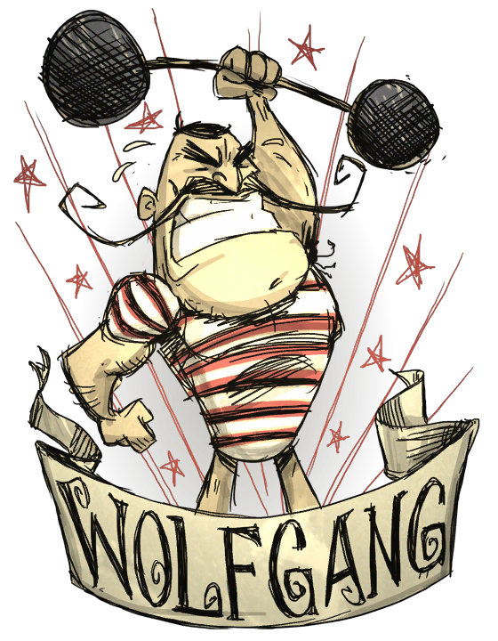

300 200 300
沃尔夫冈(Wolfgang), 他在近战时可以做出更高伤害,而且亦有比较高的生命值.这令到他在对抗怪物时会有更大优势. 他亦有一个高达300点上限的胃, 起始时则有200点, 但是根据他的饱食度多少的不同,消耗的速度也有不同。沃尔夫冈 在面对黑暗和任何种类的敌人时,理智也会下降得更快,约快于一般速度10%。
饱食状态:即沃尔夫冈较强的状态.当沃尔夫冈的饱食度提升到225或以上时,他会得到较强大的物理攻击力.在这个状态中沃尔夫冈的衣服会破裂, 肌肉会变大,头形亦会露出来.随着饱食度的增加,他的生命上限会由正常的 200 逐渐上升至最高 300 ( 当饱食度是300时 ). 在这个状态,他的攻击力会有至少 1.25x 最高 2.0x 的加成 ( 当饱食度是300时 ), 同时亦会有一个较少,但可以察觉的加速效果.由于他的体能提升, 沃尔夫冈 的饱食度会是平时3倍的扣减速度. (对比其他一般角色而言, 除了 Wes).当沃尔夫冈的饱食度下降时,这些增幅将会减少,当饱食度减至220以下时恢复正常状态。正常状态:沃尔夫冈 刚开始时的正常状态，拥有200点生命值，攻击力亦是和其他大多数一样的正常的1.0x。这个状态下沃尔夫冈饱食度扣减速度是其他一般角色的 1.5 倍 （除了Wes以外）。饥饿状态:沃尔夫冈较强的状态,当沃尔夫冈 的饱食度在100 以下时,他的特殊能力会减少,样子会变惨且瘦小,不安。随着饱食度的减少,他的生命上限会由正常的 200 下降至最低 150 (在 0 饱食时),而这个状态下他的攻击力亦会由最高 0.75x 下降到最低 0.5x。沃尔夫冈 在这个时候的行走速度会微微下降，饱食度的下降会和其他一般角色相似. （除了 Wes 以外）。这种负面效果会随着沃尔夫冈饱食度的减少而增强。缺点：由于他是一个黑夜恐惧症患者， 他在面对黑暗和怪物时理智会下降更快， 所以请小心控制他的理智问题。 由于理智的回复难度比饱食度难，如果玩家没有足够的理智回复道具，还是建议玩家在晚上睡觉，以免造成理智过低的问题。事实上他的理智也只是比其他角色流失快10%而已，再加上他的攻击力比较大，作战时间缩短，所以流失的理智和其他角色实际上差别也不算太大，只要穿上一点能回复理智的衣物就可以抵抗这个效果。